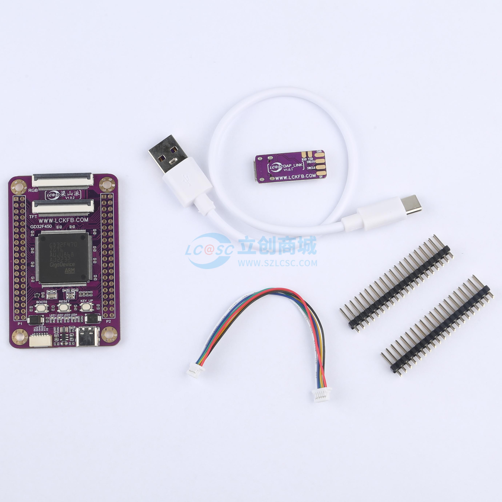
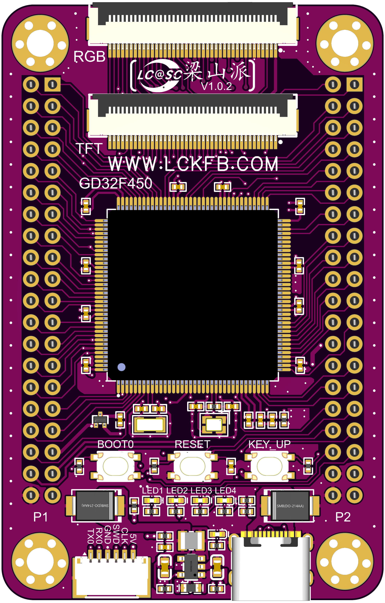
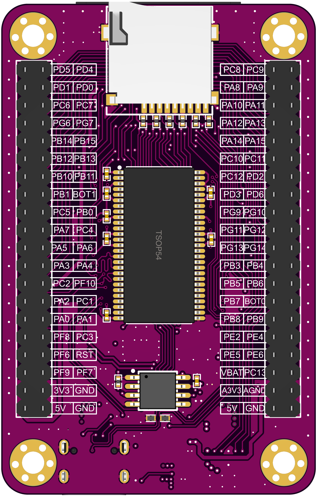
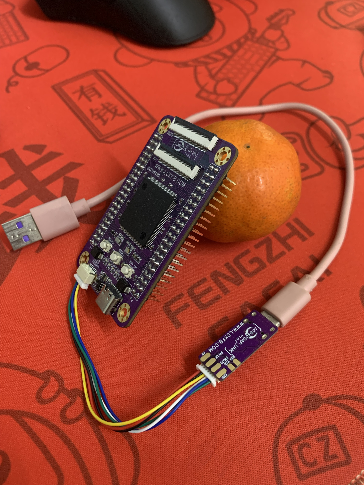
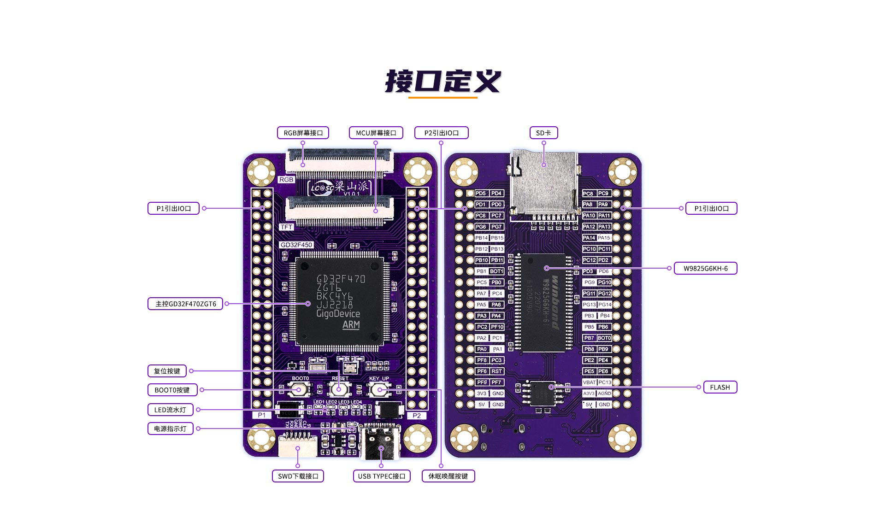
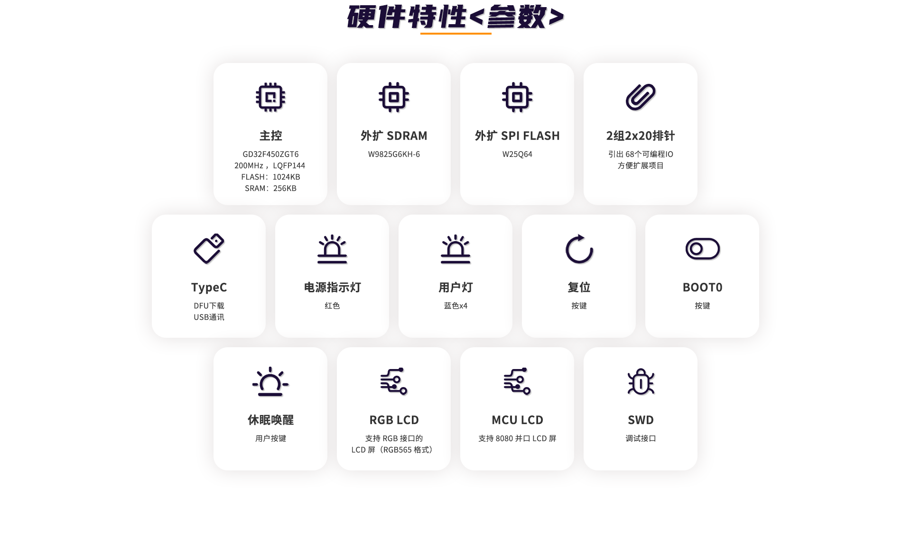
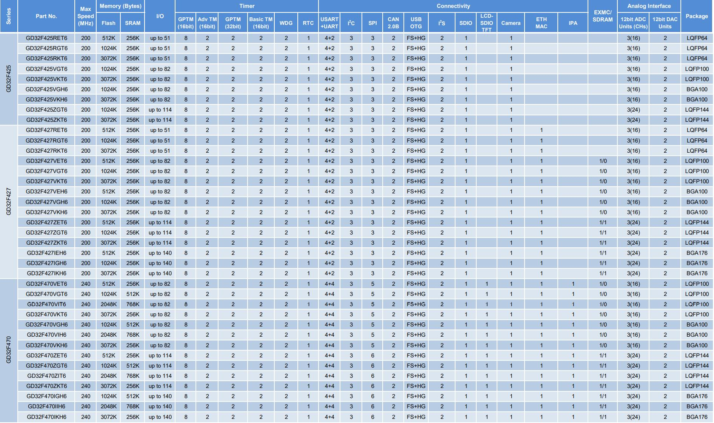
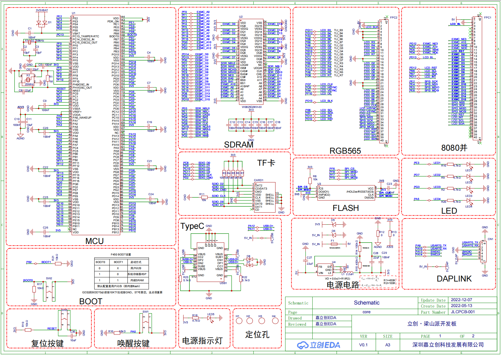
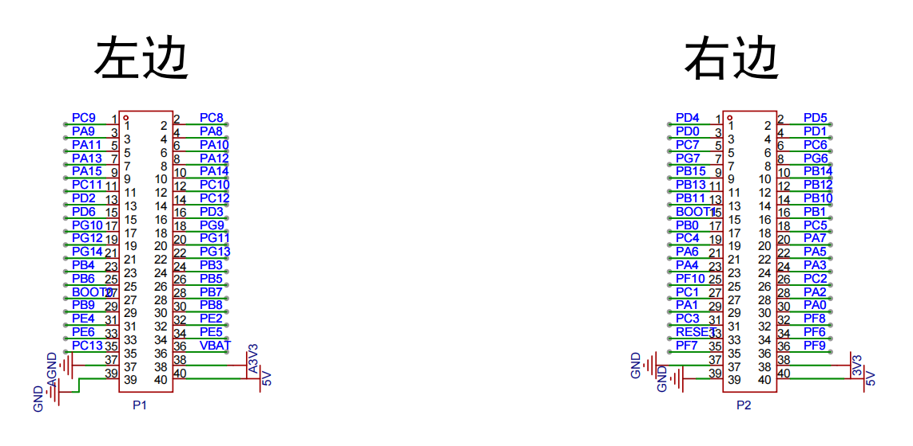

<!DOCTYPE lake>
<h2 data-lake-id="biA6i" id="biA6i"><span data-lake-id="u409f600f" id="u409f600f">包装清单</span></h2><p data-lake-id="uc86602f3" id="uc86602f3"><a data-lake-id="u5a34b12d" href="https://item.szlcsc.com/5810323.html" id="u5a34b12d" rel="noopener noreferrer" target="_blank"><span data-lake-id="u0126aac1" id="u0126aac1">https://item.szlcsc.com/5810323.html</span></a></p><p data-lake-id="u8308f7b1" id="u8308f7b1"></p><ol list="u02bae0c4"><li data-lake-id="u54efcbc5" fid="u639f2c88" id="u54efcbc5"><span data-lake-id="u1812ce20" id="u1812ce20">开发板一块</span></li></ol><ol list="ue3d9b35f" start="2"><li data-lake-id="u8cecb2c9" fid="ue7491c9c" id="u8cecb2c9"><span data-lake-id="u8d68de1b" id="u8d68de1b">USB转TypeC数据线一条</span></li><li data-lake-id="uc799d28a" fid="ue7491c9c" id="uc799d28a"><span data-lake-id="u8a2f054b" id="u8a2f054b">烧录器一个</span></li><li data-lake-id="udc307213" fid="ue7491c9c" id="udc307213"><span data-lake-id="u10f92a21" id="u10f92a21">6pin数据线一条</span></li><li data-lake-id="u0d4c9ce2" fid="ue7491c9c" id="u0d4c9ce2"><span data-lake-id="ubcb234ea" id="ubcb234ea">两组排针</span></li></ol><h2 data-lake-id="J0GXv" id="J0GXv"><span data-lake-id="u0137e242" id="u0137e242">焊接</span></h2><p data-lake-id="u9c7139e8" id="u9c7139e8"><span data-lake-id="ue87d8dfb" id="ue87d8dfb">两组排针焊接到开发板的背面。</span></p><p data-lake-id="u4eca48d8" id="u4eca48d8"></p><p data-lake-id="u8ee391c1" id="u8ee391c1"><span data-lake-id="u54d9585e" id="u54d9585e">如上图，</span><strong><span data-lake-id="u6b9e8756" id="u6b9e8756">左边是正面</span></strong><span data-lake-id="u5a26731d" id="u5a26731d">，</span><strong><span data-lake-id="uaecb87c9" id="uaecb87c9">右边是背面</span></strong><span data-lake-id="uc537648e" id="uc537648e">。</span></p><p data-lake-id="ua763ace8" id="ua763ace8"><strong><span class="lake-fontsize-14" data-lake-id="u70bfb746" id="u70bfb746" style="color: #DF2A3F">仔细观察上图，</span></strong><strong><span class="lake-fontsize-18" data-lake-id="ua8ee00fe" id="ua8ee00fe" style="color: #DF2A3F">排针黑色胶皮在背面</span></strong><strong><span class="lake-fontsize-14" data-lake-id="u943b72d3" id="u943b72d3" style="color: #DF2A3F">，不要</span></strong><strong><span class="lake-fontsize-18" data-lake-id="u4e91223b" id="u4e91223b" style="color: #DF2A3F">焊错了</span></strong><strong><span class="lake-fontsize-14" data-lake-id="ueae5bc8c" id="ueae5bc8c" style="color: #DF2A3F">。不然要遭老罪了。</span></strong></p><h2 data-lake-id="LXgsH" id="LXgsH"><span data-lake-id="u18202410" id="u18202410">使用说明（重要）</span></h2><ol list="uac4cfc8b"><li data-lake-id="u8e9081bc" fid="uf79ea444" id="u8e9081bc"><span data-lake-id="u41f83353" id="u41f83353">先焊接好排针。</span><strong><span class="lake-fontsize-12" data-lake-id="u6fc986fa" id="u6fc986fa" style="color: #DF2A3F">排针一定要焊在背面，别焊错!</span></strong></li><li data-lake-id="u168ca889" fid="uf79ea444" id="u168ca889"><span data-lake-id="ud034cbc9" id="ud034cbc9">将Usb数据线和烧录器连接，将6pin数据线和烧录器连接。</span><strong><span class="lake-fontsize-12" data-lake-id="ue7e6f561" id="ue7e6f561" style="color: #DF2A3F">6pin有正反</span></strong><span class="lake-fontsize-12" data-lake-id="ud19eed4e" id="ud19eed4e">，</span><strong><span class="lake-fontsize-12" data-lake-id="u644c0615" id="u644c0615">看清楚再插，</span></strong><strong><span class="lake-fontsize-12" data-lake-id="u05d8f13d" id="u05d8f13d" style="color: #DF2A3F">不要蛮插</span></strong><span class="lake-fontsize-12" data-lake-id="ucf49fb09" id="ucf49fb09">。</span><strong><span class="lake-fontsize-12" data-lake-id="u3f0872c2" id="u3f0872c2" style="color: #DF2A3F">不要再反复拔插他们</span></strong><strong><span class="lake-fontsize-12" data-lake-id="ua9c4b9cb" id="ua9c4b9cb">，容易断。</span></strong></li><li data-lake-id="u39776c8b" fid="uf79ea444" id="u39776c8b"><span data-lake-id="ua42a9a4c" id="ua42a9a4c">6pin的数据线连开发板。</span><strong><span class="lake-fontsize-12" data-lake-id="udea09931" id="udea09931" style="color: #DF2A3F">6pin有正反</span></strong><span class="lake-fontsize-12" data-lake-id="u4fdaf3aa" id="u4fdaf3aa">，</span><strong><span class="lake-fontsize-12" data-lake-id="u8ca3d7e5" id="u8ca3d7e5">看清楚再插，</span></strong><strong><span class="lake-fontsize-12" data-lake-id="uf7466b57" id="uf7466b57" style="color: #DF2A3F">不要蛮插</span></strong><span class="lake-fontsize-12" data-lake-id="uf015ea0f" id="uf015ea0f">。</span><strong><span class="lake-fontsize-12" data-lake-id="uc58e2ceb" id="uc58e2ceb" style="color: #DF2A3F">不要再反复拔插他们</span></strong><strong><span class="lake-fontsize-12" data-lake-id="u37e05b96" id="u37e05b96">，容易断。</span></strong></li><li data-lake-id="u344a28de" fid="uf79ea444" id="u344a28de"><strong><span class="lake-fontsize-16" data-lake-id="u89459f67" id="u89459f67" style="color: #DF2A3F">重要！！！不要</span></strong><strong><span class="lake-fontsize-12" data-lake-id="udf79afe5" id="udf79afe5" style="color: #DF2A3F">把开发板放到铁盒子里面</span></strong><span data-lake-id="u49344e71" id="u49344e71">，否则上电后</span><strong><span class="lake-fontsize-16" data-lake-id="u6a07d0a4" id="u6a07d0a4" style="color: #DF2A3F">会烧板子</span></strong><span class="lake-fontsize-12" data-lake-id="u45ba56ab" id="u45ba56ab" style="color: #DF2A3F">，</span><span class="lake-fontsize-12" data-lake-id="ud69ae553" id="ud69ae553" style="color: #000000">如有此情况，请自行购买，链接：</span><a data-lake-id="ude06ed60" href="https://lckfb.com/project/detail/lckfb_lspi" id="ude06ed60" rel="noopener noreferrer" target="_blank"><span class="lake-fontsize-12" data-lake-id="u13f21baf" id="u13f21baf">梁山派购买链接</span></a><span class="lake-fontsize-12" data-lake-id="u7671e0c3" id="u7671e0c3" style="color: #000000">，单价108元。</span></li><li data-lake-id="ub6f786cd" fid="uf79ea444" id="ub6f786cd"><strong><span class="lake-fontsize-12" data-lake-id="u33fbfe93" id="u33fbfe93">6pin线容易不要硬拽，容易断。</span></strong></li></ol><p data-lake-id="ud42ed21a" id="ud42ed21a"><strong><span class="lake-fontsize-12" data-lake-id="u008ead54" id="u008ead54">​</span></strong><br/></p><p data-lake-id="uaab1e724" id="uaab1e724"><strong><span class="lake-fontsize-12" data-lake-id="udd0f23ed" id="udd0f23ed">如果不清楚焊接成什么样，先看盯着这样图看1分钟！：</span></strong></p><p data-lake-id="ua531f3e4" id="ua531f3e4"></p><h2 data-lake-id="fjf44" id="fjf44"><span data-lake-id="u88b2d643" id="u88b2d643">参数</span></h2><p data-lake-id="u3d46d8b6" id="u3d46d8b6"><span data-lake-id="u9d64d071" id="u9d64d071">​</span><br/></p><p data-lake-id="u956456c6" id="u956456c6"></p><p data-lake-id="u77b3de47" id="u77b3de47"><span data-lake-id="u7e77903a" id="u7e77903a">硬件参数:</span></p><p data-lake-id="ua526c44f" id="ua526c44f"></p><p data-lake-id="u03b51cc0" id="u03b51cc0"><br/></p><p data-lake-id="uae6eaa41" id="uae6eaa41"><span data-lake-id="ude492661" id="ude492661">原理图:</span></p><p data-lake-id="u5bb68eeb" id="u5bb68eeb"><a data-lake-id="u2d7ddf40" href="https://pro.lceda.cn/editor#id=0c46759837334318aa4882d6d37f96fa" id="u2d7ddf40" rel="noopener noreferrer" target="_blank"><span data-lake-id="u2f51e679" id="u2f51e679">https://pro.lceda.cn/editor#id=0c46759837334318aa4882d6d37f96fa</span></a></p><h2 data-lake-id="C1gXz" id="C1gXz"><span data-lake-id="ude0a35fa" id="ude0a35fa">GD32F470</span></h2><p data-lake-id="uf7663221" id="uf7663221" style="text-indent: 2em"><span class="lake-fontsize-12" data-lake-id="ua267f4ef" id="ua267f4ef" style="color: rgb(0,0,0)">GD32F4xx系列器件是基于Arm</span><span class="lake-fontsize-12" data-lake-id="ub011cff9" id="ub011cff9" style="color: rgb(0,0,0)">®</span><span class="lake-fontsize-12" data-lake-id="ufa2caa01" id="ufa2caa01" style="color: rgb(0,0,0)"> Cortex</span><span class="lake-fontsize-12" data-lake-id="uc00b25a5" id="uc00b25a5" style="color: rgb(0,0,0)">®</span><span class="lake-fontsize-12" data-lake-id="u1ec24037" id="u1ec24037" style="color: rgb(0,0,0)">-M4处理器的32位通用微控制器。存储器的组织 </span></p><p data-lake-id="ue3260fc8" id="ue3260fc8"><span class="lake-fontsize-12" data-lake-id="u7ab2fd03" id="u7ab2fd03" style="color: rgb(0,0,0)">采用了哈佛结构，预先定义的存储器映射和高达4 GB的存储空间，充分保证了系统的灵活性和可扩展性</span></p><p data-lake-id="u2e12045a" id="u2e12045a"><strong><span class="lake-fontsize-12" data-lake-id="uedb28348" id="uedb28348">参数</span></strong></p><ul list="u25755457"><li data-lake-id="ua20384ea" fid="u98904ca0" id="ua20384ea"><span class="lake-fontsize-12" data-lake-id="ub97ab14f" id="ub97ab14f">GD32F470为Cortex</span><span class="lake-fontsize-12" data-lake-id="u74f1b2e9" id="u74f1b2e9">®</span><span class="lake-fontsize-12" data-lake-id="u1337c0ec" id="u1337c0ec">-M4增强性能型</span></li><li data-lake-id="u24419b25" fid="u98904ca0" id="u24419b25"><span class="lake-fontsize-12" data-lake-id="uf2f8fedb" id="uf2f8fedb">512K~3072K Flash, 256K~768K SRAM</span></li><li data-lake-id="u332e89d2" fid="u98904ca0" id="u332e89d2"><span class="lake-fontsize-12" data-lake-id="u7813d368" id="u7813d368">高达240MHz，支持FPU</span></li><li data-lake-id="uda05e777" fid="u98904ca0" id="uda05e777"><span class="lake-fontsize-12" data-lake-id="uf47d11ff" id="uf47d11ff">2.6~3.6V供电，5V容忍I/O</span></li><li data-lake-id="u3636ae6a" fid="u98904ca0" id="u3636ae6a"><span class="lake-fontsize-12" data-lake-id="uc84464dd" id="uc84464dd">-40℃~85 ℃工业级温度范围</span></li><li data-lake-id="uf4f3d144" fid="u98904ca0" id="uf4f3d144"><span class="lake-fontsize-12" data-lake-id="u637df8d4" id="u637df8d4">全系列硬件管脚及软件兼容</span></li></ul><p data-lake-id="u96539f15" id="u96539f15"><span class="lake-fontsize-12" data-lake-id="u39653948" id="u39653948"> 与GD32F450相比：</span></p><ul list="ue6ccb397"><li data-lake-id="uafcbd750" fid="u2d7119be" id="uafcbd750"><span class="lake-fontsize-12" data-lake-id="u808f2bb9" id="u808f2bb9">软硬件完全兼容</span></li><li data-lake-id="uda40e61c" fid="u2d7119be" id="uda40e61c"><span class="lake-fontsize-12" data-lake-id="ub630e8eb" id="ub630e8eb">主频由200MHz增加到240MHz</span></li><li data-lake-id="u06f229aa" fid="u2d7119be" id="u06f229aa"><span class="lake-fontsize-12" data-lake-id="ua7ae0c80" id="ua7ae0c80">最大SRAM从512K增加到768K</span></li></ul><p data-lake-id="u87b758bd" id="u87b758bd"><span class="lake-fontsize-12" data-lake-id="u8a1416ee" id="u8a1416ee">​</span><br/></p><p data-lake-id="u04949d6f" id="u04949d6f"><strong><span class="lake-fontsize-12" data-lake-id="u40789dbf" id="u40789dbf">型号表</span></strong></p><p data-lake-id="uabfed25b" id="uabfed25b"></p><h2 data-lake-id="B7NKG" id="B7NKG"><span data-lake-id="u5ffe043f" id="u5ffe043f">梁山派原理图</span></h2><p data-lake-id="u1279cca1" id="u1279cca1"><a class="yuque-card-link" href="../../_assets/445a708c4a9b90dc1bd77f61.pdf">梁山派核心板.pdf</a></p><p data-lake-id="u7808d390" id="u7808d390"></p><p data-lake-id="ua1c5de5b" id="ua1c5de5b"></p><p data-lake-id="uc25445e7" id="uc25445e7"><br/></p><h2 data-lake-id="N0lHu" id="N0lHu"><span data-lake-id="ud0b23367" id="ud0b23367">开发学习资料</span></h2><p data-lake-id="u0acd4dba" id="u0acd4dba"><a class="yuque-card-link" href="https://lceda001.feishu.cn/wiki/JjcewPQZ6iuQSTkD3eQcIFgfnSg" rel="noopener noreferrer" target="_blank">bookmarkInline：bookmarkInline</a></p><p data-lake-id="u65c77628" id="u65c77628"><a class="yuque-card-link" href="https://lceda001.feishu.cn/wiki/JNvYwEU5SiGldFkNcxncYXhZnZc" rel="noopener noreferrer" target="_blank">bookmarkInline：bookmarkInline</a></p><p data-lake-id="ua8422c6d" id="ua8422c6d"><a class="yuque-card-link" href="https://lceda001.feishu.cn/wiki/A2qPwUQoxi8O2ukHcr4cnAuDnje" rel="noopener noreferrer" target="_blank">bookmarkInline：bookmarkInline</a></p><p data-lake-id="u39b5be36" id="u39b5be36"><a class="yuque-card-link" href="https://lckfb.com/docs/lckfb_lspi/#/" rel="noopener noreferrer" target="_blank">bookmarkInline：bookmarkInline</a></p><p data-lake-id="u2f99485d" id="u2f99485d"><a class="yuque-card-link" href="https://lceda001.feishu.cn/docx/OPBSdsgOTorG8PxGffXcHEZRn8g?302from=wiki" rel="noopener noreferrer" target="_blank">bookmarkInline：bookmarkInline</a></p>